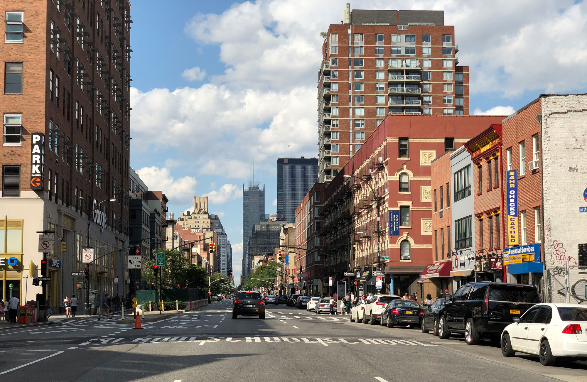

What is Manhattan, you might ask. What defines it as part of New York?
Well, Manhattan is the most densely populated out of New York City's 5 boroughs. There are many iconic sights and places to see such as Times Square, the Empire State Building. New York itself is widely considered to be "the Big Apple," and is also home to the infamous Statue of Liberty. Manhattan is rich in culture, finance, entertainment, and media. Despite Manhattan being a densely populated borough, as stated earlier, the population has actually fallen by 25% within the last 100 years. New York City has 468 subway stations, and 147 stations in Manhattan alone. New York's subway system is a transit system run by the Metropolitan Transportation Authority (MTA). Every day about 5,076,000 people take rides on the subway. However, it seems that the New York subway has become a darker place over the years, becoming a hub for fare evasion and assault crimes, so it's important to be aware of your surroundings in such a busy city!
